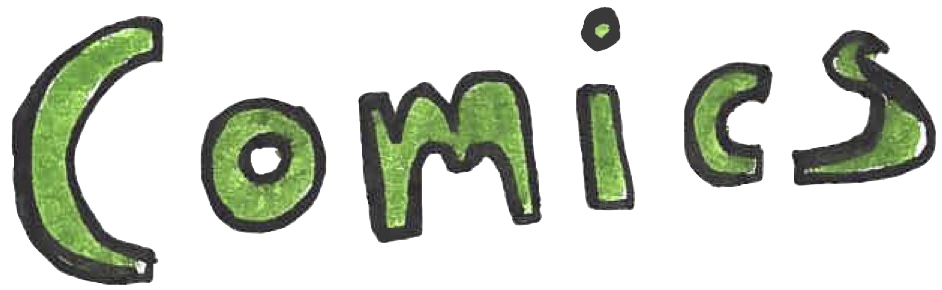
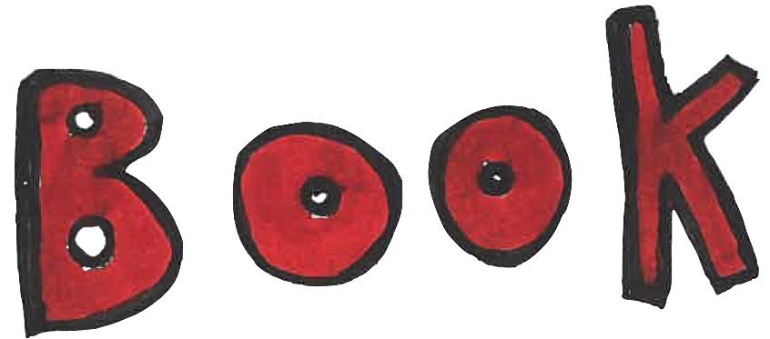

"Worship" in The Rumpus
"Nine Alternatives to Ethical Non-Monogamy" in McSweeney's
"The Cloud" in Shenandoah
"Overheard at Literary Speed Dating" in Literary Hub
"Key Elements of Straight Culture" in The New Yorker
"Six Facts About The Easter Bunny" in The New Yorker
"Early Internet Hustles Of Historical Figures" in The New Yorker
"Arthur is Forty-Five" in The New Yorker
"How I'm Planning To Knock My Baby Down A Peg" in The New Yorker
"Denny's: A Breakfast Horror" in The Rumpus
"Supermarket Fantasy & Other Stories" in Awry
"Three Poems in TriQuarterly
"We Talked to Scientists About Desire" in Hobart
"The Summer Your Parents Split" in Guernica
"Water Tower" in The Baffler
"Mother" in The Baffler
"Stay Safe, Be Well" in The Sun
“Prescriptions for Melancholy by Scale” in Volume
"On Beacon Street" in The Boston Globe
"Twenty-Two" in The Antigonish Review
"Babysitting" in Carve
"Monarch" in New Ohio Review
"Echocardiogram" and "Doom Seuss" in apt
"My Mother" in The Academy of American Poets
"A Little Song" The Adroit Prize for Poetry, Editor's List
“Hot Meat” PANK Blog
“Love Poem for Scarecrow” in The Adroit Journal
“Jesus and his Toga” PANK blog

"The Frustrated Ones" (Finishing Line Press)
Brooklyn Poets
Talking with Ree Sherwood from Carve Magazine